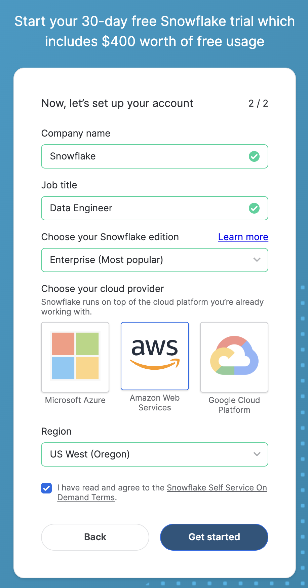
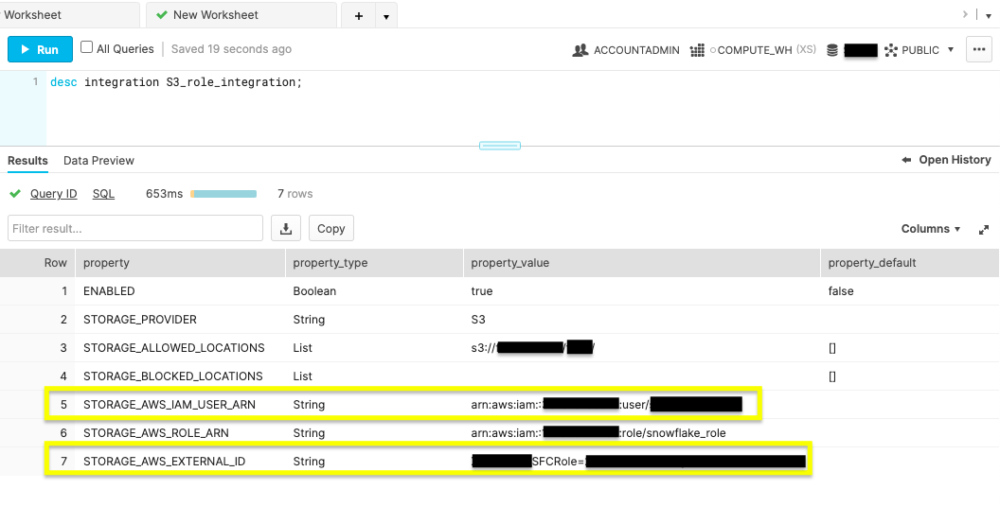

When building data applications, your users count on seeing the latest. Stale data is less actionable and could lead to costly errors. That's why continuously generated data is essential. Snowflake provides a data loading tool to drive updates, ensuring your databases are accurate by updating tables in micro-batches.
Let's look into how Snowpipe can be configured for continual loading. Then, we can review how you can efficiently perform basic management tasks. But first, If you're unfamiliar with Snowflake or loading database objects, check out these resources to get familiar with the topics ahead.
Prerequisites
- Quick Video Introduction to Snowflake
- Snowflake Data Loading Basics Video
- AWS S3 Service Documentation
What You'll Learn
- Snowpipe staging methods
- Configure security access for Snowflake and AWS
- Automate Snowpipe with AWS S3 event notifications
- Manage Snowpipe and remove
- Next steps with database automation
What You'll Need
- Create a Snowflake account with an ACCOUNTADMIN role
- AWS Account with access to a Snowflake supported region
What You'll Build
- Automated data loading with Snowpipe between AWS S3 bucket and Snowflake database.
After ensuring the prerequisites detailed in this section, jump into the queueing data integration options with Snowpipe.
To complete this lab, you'll need a Snowflake account. A free Snowflake trial account will work just fine. To open one:
- Navigate to https://signup.snowflake.com/
- Start the account creation by completing the first page of the form on the page
- On the next section of the form, be sure to set the Snowflake edition to "Enterprise (Most popular")
- Select "AWS – Amazon Web Services" as the cloud provider
- Select "US West (Oregon)" as the region
- Complete the rest of the form and click "Get started"

Create a S3 Bucket
- Log in to the AWS Management Console or create a free trial account if you don't have one
- Must have a credit card and mobile number to set up a free trial account. However, account won't be charged unless upgraded after trial ends.
- Once account is created, search for "S3" in the search bar
- Click on "Create bucket"
- Fill in the following details:
- Bucket name: Must be globally unique (e.g., my-example-bucket-123)
- Region: Choose your desired AWS Region
- Leave other settings as default or adjust as needed (e.g., versioning, encryption)
- Click "Create bucket" at the bottom
Create a Prefix (folder)
- After creating the bucket, click on the bucket name to open it
- Click the "Create folder" button
- Enter the folder name (e.g., my-prefix/)
- Click "Create folder"
Be sure to write down or memorize your bucket and prefix to be used in future steps.
Snowpipe is an event based data ingest tool. Snowpipe provides two main methods for triggering a data loading event. This trigger could be a cloud storage notification (i.e. AWS S3 ObjectCreated event) or by directly calling the Snowpipe insertFiles REST API.
- Cloud Storage Event Notifications (AWS S3, GCP CS, Azure Blob)
- Snowpipe's REST API
This tutorial follows option 1, automating continuous data loading with cloud event notifications on AWS S3. In the next section, we'll configure your cloud notification preferences.

The image above reveals the two Snowpipe workflows. Option one shows continuous data loading with cloud storage event notifications. Option two illustrates queueing data with a REST API call to the insertFiles endpoint.
Notifications from your cloud storage infrastructure are a straight-forward way to trigger Snowpipe for continuous loading.
Cloud Storage Platforms Snowpipe Supports:
- Google Cloud Storage
- Microsoft Azure Blob Storage
- AWS S3
This tutorial focuses on using AWS S3 buckets with Snowpipe. Visit Snowflake's documentation to learn more about connecting Snowpipe to Google Cloud Storage or Microsoft Azure Blob Storage.
Choosing AWS S3 with Snowpipe integration allows you to decide between using an S3 event notification or Amazon's Simple Notification Service(SNS) to stage data for integration. Check if you currently have S3 event notifications that may conflict with a new notification. If so, you'll want to opt for SNS notifications. If not, the simple choice is to trigger continuous integration with S3 event notifications. Be aware that SNS network traffic travels outside of Amazon's VPC. If the potential security risk is an issue, consider employing AWS's PrivateLink service.
Let's go over the access requirements needed to begin using S3 event notifications to load new data seamlessly in micro-batches.
To begin using AWS storage notifications for Snowpipe processing, you'll follow these steps within your AWS and Snowflake account to set up the security conditions.
- Create IAM Policy for Snowflake's S3 Access
Snowflake needs IAM policy permission to access your S3 with GetObject, GetObjectVersion, and ListBucket. Log into your AWS console and search for IAM. Within the Account settings, confirm the Security Token Service list records your account's region as Active.
Navigate to Policies and click on ‘Create policy'. Switch the ‘Policy editor' to JSON and replace with the following:
{
"Version": "2012-10-17",
"Statement": [
{
"Effect": "Allow",
"Action": [
"s3:GetObject",
"s3:GetObjectVersion"
],
"Resource": "arn:aws:s3:::<bucket>/<prefix>/*"
},
{
"Effect": "Allow",
"Action": "s3:ListBucket",
"Resource": "arn:aws:s3:::<bucket>",
"Condition": {
"StringLike": {
"s3:prefix": [
"*"
]
}
}
}
]
}
Don't forget to replace the
- New IAM Role
Add a new IAM role tied to the ‘snowflake_access' IAM policy by click on ‘Roles' under ‘Access management' followed by ‘Create role'. Create the role with the following settings:
- Trusted entity type: AWS account
- An AWS account: This account
- Require External ID: [x]
- External ID: 0000
- Add permissions: search for ‘snowflake_access' and select the checkbox and hit next
- Role Name: snowflake_role
- Role Description: Snowflake role for access to S3 bucket
Create the role, then click to see the role's summary and record the ARN.
- Integrate IAM user with Snowflake storage.
Within your Snowflake web console, you'll run the following command to integrate IAM user with Snowflake storage.
CREATE OR REPLACE STORAGE INTEGRATION S3_role_integration
TYPE = EXTERNAL_STAGE
STORAGE_PROVIDER = S3
ENABLED = TRUE
STORAGE_AWS_ROLE_ARN = "arn:aws:iam::<role_account_id>:role/snowflake_role"
STORAGE_ALLOWED_LOCATIONS = ("s3://<bucket>/<path>/");
Be sure to change the
 Note in the figure above the ACCOUNTADMIN role and status message of a successful creation.
Note in the figure above the ACCOUNTADMIN role and status message of a successful creation.
- Run storage integration description command.
desc integration S3_role_integration;
Run the above command to display your new integration's description.  Record the property values displayed for STORAGE_AWS_IAM_USER_ARN and STORAGE_AWS_EXTERNAL_ID.
- IAM User Permissions
Navigate back to your AWS IAM service console. Within the Roles, click the ‘snowflake_role'. On the Trust relationships tab, click Edit trust policy and edit the file with the STORAGE_AWS_IAM_USER_ARN and STORAGE_AWS_EXTERNAL_ID retrieved in the previous step.
{
"Version": "2012-10-17",
"Statement": [
{
"Effect": "Allow",
"Principal": {
"AWS": "<STORAGE_AWS_IAM_USER_ARN>"
},
"Action": "sts:AssumeRole",
"Condition": {
"StringEquals": {
"sts:ExternalId": "<STORAGE_AWS_EXTERNAL_ID>"
}
}
}
]
}
Update Policy after replacing the string values for your STORAGE_AWS_IAM_USER_ARN and STORAGE_AWS_EXTERNAL_ID.
After completing this section, your AWS and Snowflake account permissions are ready for Snowpipe. The next section provides the steps to perform automated micro-batching with cloud notifications triggering Snowpipe.
Now that your AWS and Snowflake accounts have the right security conditions, complete Snowpipe setup with S3 event notifications.
- Create a Database, Table, Stage, and Pipe
On a fresh Snowflake web console worksheet, use the commands below to create the objects needed for Snowpipe ingestion.
Create Database
create or replace database S3_db;
Execute the above command to create a database called ‘S3_db'. The Results output will show a status message of Database S3_DB successfully created.
Create Table
create or replace table S3_table(files string);
This command will make a table by the name of ‘S3_table' on the S3_db database. The Results output will show a status message of Table S3_TABLE successfully created.
Create Stage
use schema S3_db.public;
create or replace stage S3_stage
url = ('s3://<bucket>/<path>/')
storage_integration = S3_role_integration;
To make the external stage needed for our S3 bucket, use this command. Be sure to update the
 The figure above shows Results reading ‘Stage area S3_STAGE successfully created'.
The figure above shows Results reading ‘Stage area S3_STAGE successfully created'.
Create Pipe
The magic of automation is in the create pipe parameter, auto_ingest=true. With auto_ingest set to true, data stagged will automatically integrate into your database.
create or replace pipe S3_db.public.S3_pipe auto_ingest=true as
copy into S3_db.public.S3_table
from @S3_db.public.S3_stage;
 Confirm you receive a status message of, ‘Pipe S3_PIPE successfully created'.
Confirm you receive a status message of, ‘Pipe S3_PIPE successfully created'.
- Configure Snowpipe User Permissions
Create a new role named S3_role with ACCOUNTADMIN access. Give the S3_role usage permissions to the database objects, insert permission for the S3_table and ownership of S3_pipe. Lastly, set the S3_role as a Snowflake user's default. Be sure to update
-- Create Role
use role accountadmin;
ALTER PIPE S3_PIPE SET PIPE_EXECUTION_PAUSED=true;
GRANT OWNERSHIP ON PIPE S3_db.public.S3_pipe TO ROLE accountadmin;
create or replace role S3_role;
-- Grant Object Access and Insert Permission
grant usage on database S3_db to role S3_role;
grant usage on schema S3_db.public to role S3_role;
grant insert, select on S3_db.public.S3_table to role S3_role;
grant usage on stage S3_db.public.S3_stage to role S3_role;
-- Bestow S3_pipe Ownership
grant ownership on pipe S3_db.public.S3_pipe to role S3_role;
-- Grant S3_role and Set as Default
grant role S3_role to user <username>;
alter user <username> set default_role = S3_role;

- New S3 Event
Run the show pipes command to record the ARN listed in the ‘notification_channel' column.
show pipes;

Copy the ARN because you'll need it to configure the S3 event notification.
Sign in to your AWS account and navigate to the S3 service console. Select the bucket being used for Snowpipe and go to the Properties tab. The Events notification card listed will allow you to Create event notification. Create a notification with the values listed:
- Event name: Auto-ingest Snowflake
- Events types: All object create events
- Destination: SQS Queue
- Specify SQS queues: Enter SQS queue ARN
- SQS queue: <S3_pipe_ARN>
 Snowpipe's automated micro-batching is now active. Learn how to manage database integration in the next step.
Snowpipe's automated micro-batching is now active. Learn how to manage database integration in the next step.
Snowpipe is configured and now updates the Snowflake database when any object is created in the AWS S3 bucket. Let's review a few common commands to manage and remove Snowpipe.
ALTER PIPE
- Pause Snowpipe
ALTER PIPE ... SET PIPE_EXECUTION_PAUSED = true
Before making configuration changes with ALTER PIPE, stop the Snowpipe process by pausing it by setting PIPE_EXECUTION_PAUSED to true. Once you're ready to start the pipe again, set this parameter to false.
- Check Snowpipe Status
SYSTEM$PIPE_STATUS
To check the status of the pipe, run the above command.
DROP PIPE
drop pipe S3_db.public.S3_pipe;
The drop command will delete your Snowpipe once you are finished with this tutorial.
SHOW PIPE
show pipes
Confirm the pipe was removed by displaying all of the pipes.
After wrapping up this section, you're ready to look ahead to using Snowpipe on your applications.
You've learned the benefits of continuous data loading and the different ways Snowpipe can be triggered to load new data. Plus, you can now configure cloud storage event notifications and manage Snowpipe.
Review the various ways to implement Snowpipe. If you're contemplating migrating an active database, select the staging method best for your architecture, and test the workflow on a small dataset. Experimenting will allow for an accurate cost-benefit analysis. If you aren't gearing up to migrate, you quickly fire up a Java or Python SDK to see how Snowpipe uses REST API endpoints for data integration.
What we've covered
- Snowpipe Continuous Data Loading vs SnowPipe REST API
- Configuring AWS S3 event notifications for Snowpipe
- Creating, managing, and deleting pipes in Snowflake
To learn more about Snowpipe, checkout the Snowpipe reference documentation.